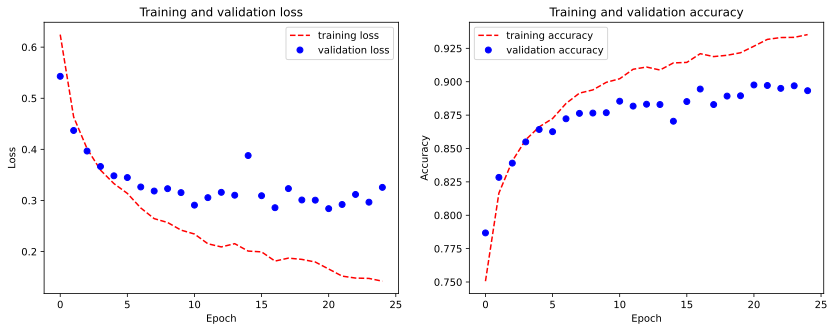
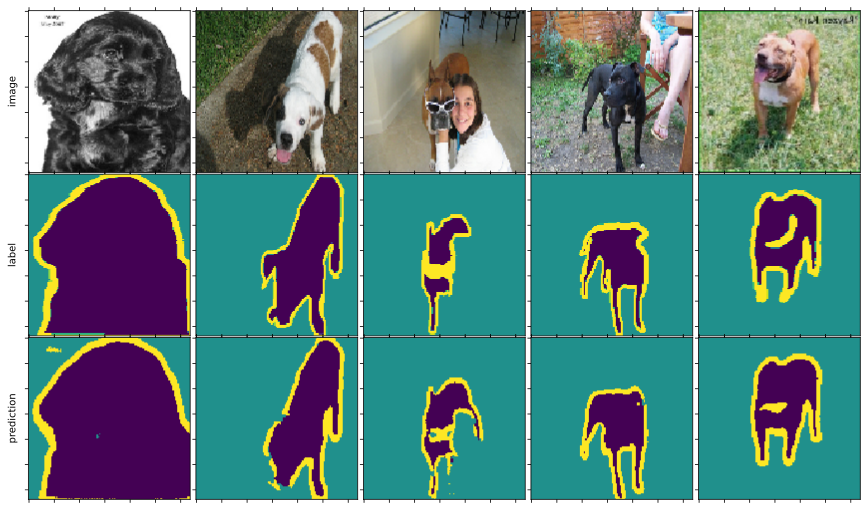

Oxford-iiit-pet (tensorflow)¶
!pip install git+https://github.com/phylsix/dOD.git
import os
os.environ['TF_FORCE_GPU_ALLOW_GROWTH'] = 'true'
import tensorflow as tf
import numpy as np
import matplotlib.pyplot as plt
%matplotlib inline
from dOD.tf_model.model import UNet
from dOD.tf_model.datasets import oxford_iiit
from dOD.tf_model.trainer import Trainer
H, W = oxford_iiit.IMAGE_SIZE
train_ds, test_ds = oxford_iiit.load_data()
modelMaker = UNet(input_shape=(H, W, oxford_iiit.CHANNELS),
kernel_shape=(3, 3), nlayer=2,
root_feature=64, depth=5, padding='same', activation='relu', norm_type='instancenorm',
drop_rate=0, num_classes=oxford_iiit.CLASSES)
modelMaker.build_net()
modelMaker.compile(learning_rate=1e-3,
loss=tf.keras.losses.SparseCategoricalCrossentropy(),
metrics=['sparse_categorical_accuracy'])
modelMaker.describle()
-------- input shape: (None, 128, 128, 3)
> layer 0 shape: (None, 128, 128, 64)
> layer 2 shape: (None, 128, 128, 64)
downstream layer 1 shape: (None, 128, 128, 64)
> layer 0 shape: (None, 64, 64, 128)
> layer 3 shape: (None, 64, 64, 128)
downstream layer 2 shape: (None, 64, 64, 128)
> layer 0 shape: (None, 32, 32, 256)
> layer 3 shape: (None, 32, 32, 256)
downstream layer 3 shape: (None, 32, 32, 256)
> layer 0 shape: (None, 16, 16, 512)
> layer 3 shape: (None, 16, 16, 512)
downstream layer 4 shape: (None, 16, 16, 512)
> layer 0 shape: (None, 8, 8, 1024)
> layer 3 shape: (None, 8, 8, 1024)
bottom layer 5 shape: (None, 8, 8, 1024)
> layer 0 shape: (None, 16, 16, 512)
> layer 3 shape: (None, 16, 16, 512)
upstream layer 4 shape: (None, 16, 16, 512)
> layer 0 shape: (None, 32, 32, 256)
> layer 3 shape: (None, 32, 32, 256)
upstream layer 3 shape: (None, 32, 32, 256)
> layer 0 shape: (None, 64, 64, 128)
> layer 3 shape: (None, 64, 64, 128)
upstream layer 2 shape: (None, 64, 64, 128)
> layer 0 shape: (None, 128, 128, 64)
> layer 3 shape: (None, 128, 128, 64)
upstream layer 1 shape: (None, 128, 128, 64)
-------- output shape: (None, 128, 128, 3)
T = Trainer(logbase=None)
history = T.fit(modelMaker.net, train_ds, validation_dataset=test_ds, epochs=25, batch_size=16)
Epoch 1/25
2/230 [..............................] - ETA: 42s - loss: 1.1137 - sparse_categorical_accuracy: 0.3619WARNING:tensorflow:Callbacks method `on_train_batch_end` is slow compared to the batch time (batch time: 0.1251s vs `on_train_batch_end` time: 0.2478s). Check your callbacks.
WARNING:tensorflow:Callbacks method `on_train_batch_end` is slow compared to the batch time (batch time: 0.1251s vs `on_train_batch_end` time: 0.2478s). Check your callbacks.
230/230 [==============================] - 115s 500ms/step - loss: 0.6245 - sparse_categorical_accuracy: 0.7506 - val_loss: 0.5429 - val_sparse_categorical_accuracy: 0.7868
Epoch 2/25
230/230 [==============================] - 115s 499ms/step - loss: 0.4634 - sparse_categorical_accuracy: 0.8166 - val_loss: 0.4369 - val_sparse_categorical_accuracy: 0.8284
Epoch 3/25
230/230 [==============================] - 116s 504ms/step - loss: 0.4013 - sparse_categorical_accuracy: 0.8406 - val_loss: 0.3966 - val_sparse_categorical_accuracy: 0.8390
Epoch 4/25
230/230 [==============================] - 119s 517ms/step - loss: 0.3593 - sparse_categorical_accuracy: 0.8565 - val_loss: 0.3665 - val_sparse_categorical_accuracy: 0.8549
Epoch 5/25
230/230 [==============================] - 119s 515ms/step - loss: 0.3330 - sparse_categorical_accuracy: 0.8662 - val_loss: 0.3483 - val_sparse_categorical_accuracy: 0.8642
Epoch 6/25
230/230 [==============================] - 118s 513ms/step - loss: 0.3138 - sparse_categorical_accuracy: 0.8724 - val_loss: 0.3448 - val_sparse_categorical_accuracy: 0.8626
Epoch 7/25
230/230 [==============================] - 116s 503ms/step - loss: 0.2853 - sparse_categorical_accuracy: 0.8837 - val_loss: 0.3264 - val_sparse_categorical_accuracy: 0.8723
Epoch 8/25
230/230 [==============================] - 118s 514ms/step - loss: 0.2644 - sparse_categorical_accuracy: 0.8915 - val_loss: 0.3184 - val_sparse_categorical_accuracy: 0.8763
Epoch 9/25
230/230 [==============================] - 119s 516ms/step - loss: 0.2569 - sparse_categorical_accuracy: 0.8939 - val_loss: 0.3230 - val_sparse_categorical_accuracy: 0.8765
Epoch 10/25
230/230 [==============================] - 117s 510ms/step - loss: 0.2420 - sparse_categorical_accuracy: 0.8995 - val_loss: 0.3154 - val_sparse_categorical_accuracy: 0.8768
Epoch 11/25
230/230 [==============================] - 113s 490ms/step - loss: 0.2343 - sparse_categorical_accuracy: 0.9022 - val_loss: 0.2908 - val_sparse_categorical_accuracy: 0.8854
Epoch 12/25
230/230 [==============================] - 116s 506ms/step - loss: 0.2153 - sparse_categorical_accuracy: 0.9093 - val_loss: 0.3055 - val_sparse_categorical_accuracy: 0.8817
Epoch 13/25
230/230 [==============================] - 121s 526ms/step - loss: 0.2091 - sparse_categorical_accuracy: 0.9110 - val_loss: 0.3159 - val_sparse_categorical_accuracy: 0.8832
Epoch 14/25
230/230 [==============================] - 119s 518ms/step - loss: 0.2154 - sparse_categorical_accuracy: 0.9088 - val_loss: 0.3103 - val_sparse_categorical_accuracy: 0.8829
Epoch 15/25
230/230 [==============================] - 121s 527ms/step - loss: 0.2010 - sparse_categorical_accuracy: 0.9141 - val_loss: 0.3879 - val_sparse_categorical_accuracy: 0.8704
Epoch 16/25
230/230 [==============================] - 121s 527ms/step - loss: 0.1994 - sparse_categorical_accuracy: 0.9145 - val_loss: 0.3093 - val_sparse_categorical_accuracy: 0.8852
Epoch 17/25
230/230 [==============================] - 119s 517ms/step - loss: 0.1814 - sparse_categorical_accuracy: 0.9210 - val_loss: 0.2858 - val_sparse_categorical_accuracy: 0.8945
Epoch 18/25
230/230 [==============================] - 120s 521ms/step - loss: 0.1872 - sparse_categorical_accuracy: 0.9188 - val_loss: 0.3232 - val_sparse_categorical_accuracy: 0.8829
Epoch 19/25
230/230 [==============================] - 121s 527ms/step - loss: 0.1847 - sparse_categorical_accuracy: 0.9198 - val_loss: 0.3009 - val_sparse_categorical_accuracy: 0.8892
Epoch 20/25
230/230 [==============================] - 120s 523ms/step - loss: 0.1795 - sparse_categorical_accuracy: 0.9217 - val_loss: 0.3006 - val_sparse_categorical_accuracy: 0.8895
Epoch 21/25
230/230 [==============================] - 118s 514ms/step - loss: 0.1658 - sparse_categorical_accuracy: 0.9266 - val_loss: 0.2840 - val_sparse_categorical_accuracy: 0.8976
Epoch 22/25
230/230 [==============================] - 122s 531ms/step - loss: 0.1520 - sparse_categorical_accuracy: 0.9317 - val_loss: 0.2921 - val_sparse_categorical_accuracy: 0.8972
Epoch 23/25
230/230 [==============================] - 123s 533ms/step - loss: 0.1481 - sparse_categorical_accuracy: 0.9331 - val_loss: 0.3117 - val_sparse_categorical_accuracy: 0.8950
Epoch 24/25
230/230 [==============================] - 121s 525ms/step - loss: 0.1475 - sparse_categorical_accuracy: 0.9332 - val_loss: 0.2966 - val_sparse_categorical_accuracy: 0.8970
Epoch 25/25
230/230 [==============================] - 119s 518ms/step - loss: 0.1420 - sparse_categorical_accuracy: 0.9353 - val_loss: 0.3256 - val_sparse_categorical_accuracy: 0.8933
def show_history(history, EPOCHS=25):
train_loss = history.history['loss']
val_loss = history.history['val_loss']
train_acc = history.history['sparse_categorical_accuracy']
val_acc = history.history['val_sparse_categorical_accuracy']
fig, axes = plt.subplots(1, 2, figsize=(14, 5))
axes[0].plot(range(EPOCHS), train_loss, 'r--', label='training loss')
axes[0].plot(range(EPOCHS), val_loss, 'bo', label='validation loss')
axes[0].set_title('Training and validation loss')
axes[0].set_xlabel('Epoch')
axes[0].set_ylabel('Loss')
axes[0].legend()
axes[1].plot(range(EPOCHS), train_acc, 'r--', label='training accuracy')
axes[1].plot(range(EPOCHS), val_acc, 'bo', label='validation accuracy')
axes[1].set_title('Training and validation accuracy')
axes[1].set_xlabel('Epoch')
axes[1].set_ylabel('Accuracy')
axes[1].legend()
show_history(history, 25)

def show_result(train_ds, model, N=5):
fig, axes = plt.subplots(3, N, sharex=True, sharey=True,
figsize=(N * 3, 9), gridspec_kw={'wspace': 0.01, 'hspace': 0.01})
for i, (img, label) in enumerate(train_ds.shuffle(buffer_size=1000).take(N).batch(1)):
prediction = model.predict(img)[0]
axes[0][i].matshow(img[0])
axes[1][i].matshow(label[0, ..., 0], )
axes[2][i].matshow(prediction.argmax(axis=-1), )
for ax in axes:
for x in ax:
x.set_xticklabels([])
x.set_yticklabels([])
for i, x in enumerate(['image', 'label', 'prediction']):
axes[i][0].set_ylabel(x)
show_result(train_ds, modelMaker.net)
